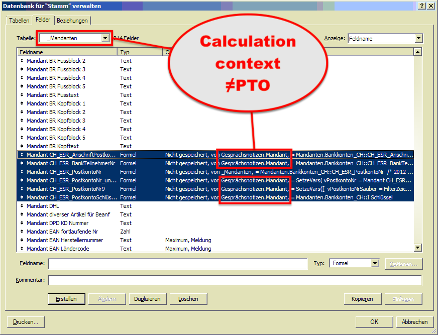
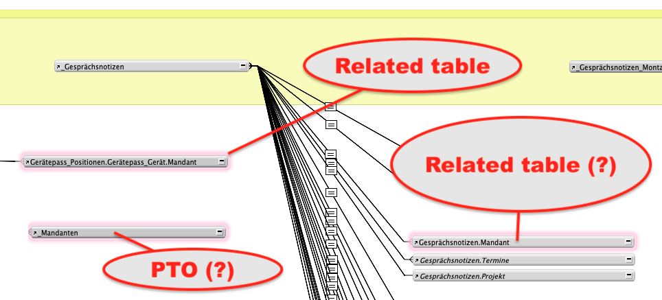
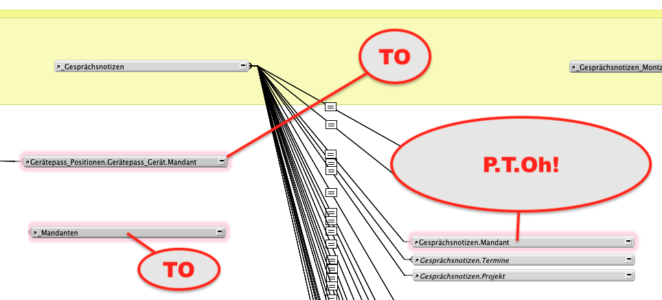

Imposter PTOs
P-T-Oh! … Gotcha!
Have you ever added a new field to a table only to find that the calculation context is not what you expected?

This can be quite problematic, since, with the wrong calculation context, the calculation can produce quite incorrect results.
PTO = Primary Table Occurence = the ‘main’ table occurence
It’s also quite unepected and confusing…because, taking a look at the relationship graph, everything appears to be alright:

- You can see the
PTOwhich is used for your layouts - in this case the_MandantenTO with the underscore at the start - and the other ‘related TOs’ - with the table name ‘Mandant’ at the end.
[At GBS we have a naming convention that prefixes the base table and the PTO with an underscore, so that the PTO is always the first TO in the table picker list.]
All seems well, but clearly it is not.
So, what’s going on?
The Problem
The problem is you have (passively or actively) created an Imposter PTO in your file!
…either through negligence or as a product of resturcturing your database.
What are Imposter PTOs?
A PTO - the Primary Table Occurence of a table - is…
- the TO you ususally use for layouts
- the TO that you expect to appear in the calculation context of a calculation field
- however, it must be the base table’s first TO created in the file
On the other hand, an Imposter PTO is…
- a TO that looks like it’s the primary table occurence of a table (according to your naming conventions), but…
- it is not the first TO in the file.
So here you see (what you think is) the PTO at the bottom left plus a couple of related TOs.

This typically occurs
- when the developer is inattentive and accidentally uses the first TO as a related TO to some other table
- when a table is imported into a file, where a refernce to the table already exists as a related TO to some other table
So what?
What are the consequences of having an Imposter PTO?
Imposter PTOs can cause problems with calculations in new fields, because the default calculation context is not the TO you expect it to be.
This is best illustrated with an example:
User Story: Imposter PTO caused by Refactoring the Database
Say
- your naming practice is to prefix your BaseTables and PTOs with an underscore
- you initially have two files to store your invoice data
This may be the inital set up
-
File
Invoices.fmp12- base table
_Invoices - PTO
_Invoices - related TO
Invoices.InvoiceLineItems
- base table
-
File
InvoiceLineItems.fmp12- base table
_InvoiceLineItems, - PTO
_InvoiceLineItems - related TO
InvoicesLineItems.Invoice
- base table
At first all is well and good, but some day the double work of maintaining two files becomes too much overhead and you decide to refactor your database and put everything into the Invoices.fmp12 file.
You do this by
- importing the
InvoiceLineItemstable perfectly into theInvoices.fmp12file. - Copying the layout + script code over to the
Invoices.fmp12file - Removing all references to the
InvoicesLineItemsfile - Deleting the
InvoicesLineItemsfile - Testing and fixing (mostly,
Go to Related Recordsteps where the Target Layout has broken)
The structure you now have is like this:
-
File
Invoices.fmp12- base table
_Invoices - PTO
_Invoices - related TO
Invoices.InvoiceLineItems - New PTO (*)
_InvoiceLineItems
- base table
The Problem
You have created an Imposter PTO in your file!
All seems well, and you’re happy with your work, until one day down the line you create a new calculation field in the _InvoiceLineItems table…to discover that the default Calculation context in the calculation dialog is Invoices.InvoiceLineItems and not _InvoiceLineItems.😳
Even duplicating a field by copying and pasting the field, causes the Calculation context to change from _InvoiceLineItems to Invoices.InvoiceLineItems 😱
The Solutions
Three solutions are available to you.
Avoid the problem
The best solution is to avoid the problem by adopting the Golden Rule
Always use the very first TO as the PTO!
If, on the other hand, you can’t avoid a potenital Imposter PTO due to a table import, then you must weigh up the two options:
- Replace the imposter PTO with a newer TO
- Just live with it.
Living with an Imposter PTO
An imposter PTO is not such a problem, if you remain aware of it and take precautions:
When living with an Imposter PTO, always take care to correct the calculation context when creating new fields or pasting fields into the table.
Replacing the Imposter PTO
To remove the Imposter TO you must
- Duplicate the PTO Imposter (the related TO)
- Change all references from the old TO to the new TO
- Delete the old TO
Like this, the new TO gets a higher internal ID than the Imposter TO, so that the Imoster TO becomes the new PTO.